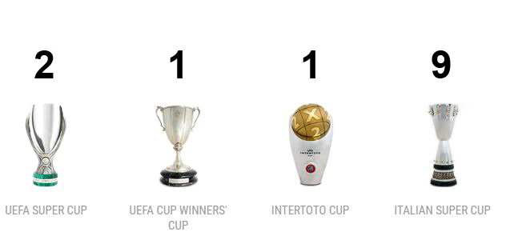

|  |
La Juventus, lo sappiamo, è una delle squadre più amate e seguite sia in Italia che nel mondo. Le tante vittorie conseguite dalla sua nascita (la Vecchia Signora, infatti, è della classe 1897) hanno contribuito a questa popolarità. Ma se qualcuno si chiedesse quanti trofei ha vinto la Juventus nella sua storia, ora andremo a scoprirlo. Quanti scudetti ha vinto la Juventus? Gli scudetti della Juventus, ovvero le volte in cui i bianconeri sono stati campioni della Serie A, sono ben 36. Nessuno, nella lunga storia della nostra massima serie, ne ha vinti così tanti. Il primo di questa lunga serie è datato 1905, ma nella storia bianconera ha un importanza fondamentale (tra quelli del passato) quello datato 1957-1958, ovvero il decimo, che ha regalato la prima stella sul petto alla formazione piemontese. Era la Juve di Charles, Sivori e Boniperti. La seconda stella (ovvero lo scudetto numero venti) arriva nel 1981-1982, con la romantica Juve di Zoff, Cabrini, Gentile, Tardelli e Scirea. Per la terza stella si deve attendere la stagione 2013-2014, quando fu Antonio Conte a guidare Tevez, Buffon e Pogba allo scudetto numero trenta. Quello, peraltro, era il terzo dei nove consecutivi arrivati dal 2011-2012 al 2019-2020.Coppe Italia ha vinto la Juventus? Altro trofeo nazionale, altra incetta di titoli bianconeri: la Juventus detiene il record di Coppe Italia vinte, ben 14: si va dalla prima del 1937-1938 all’ultima conquistata proprio nel 2020-2021. Nel 2014-2015 è arrivata la decima Coppa Italia, quella che ha conferito alla Juve la coccarda tricolore. Le Supercoppe Italiane vinte dalla Juventus Per chi si chiedesse quante Supercoppe Italiane ha vinto la Juve, la risposta è 9: record anche questo, nessuna squadra in Italia ne ha vinte così tante. Del resto, questo trofeo si assegna nel confronto tra vincitori di Scudetto e di Coppa Italia: pertanto, la Juve ha avuto numerosissime chance di vincerla. Essendo un trofeo relativamente recente, la prima Supercoppa è arrivata nel 1995 contro il Parma; la più recente, invece, a Reggio Emilia contro il Napoli nel 2020.Champions League ha vinto la Juventus? Nonostante le numerose partecipazioni alla massima rassegna continentale, la Juventus ha vinto solo due volte la Coppa dei Campioni/Champions League. La prima nel 1984/1985, contro il Liverpool, grazie a Platini su rigore, nella triste serata dell’Heysel; la seconda, nel 1995/1996, a Roma contro l’Ajax, ai rigori. In mezzo la maledizione delle finali che l’ha vista soccombere nelle ultime 5 apparizioni all’atto conclusivo della Champions. |